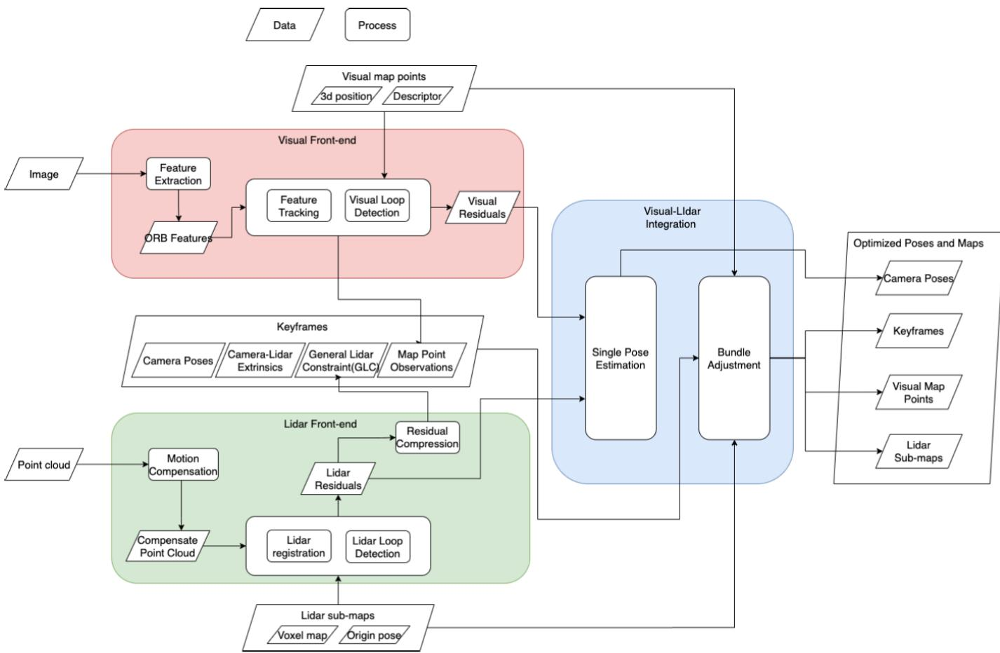
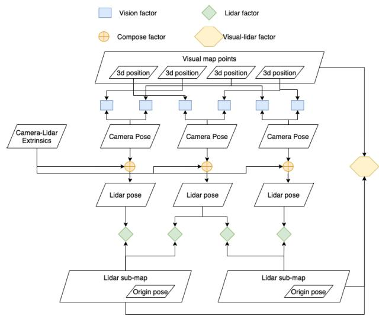
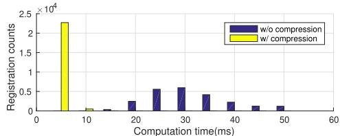
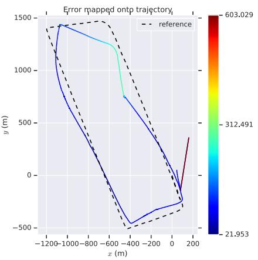

本节目标
读完你应该能：明确 TVL-SLAM 不属于 LIVO（无 IMU、特征法、非实时）；说清它的紧耦合体现在因子图后端；讲清 GLF 把海量激光残差压成 6 维；并把本季五篇放进「滤波 vs 优化」坐标。
和前面课程怎么接
接第四季 0078 LIO-SAM（因子图四类因子）；接第三季 0043–0045 ORB-SLAM2（其视觉前端）；接第二季 0018–0019 BA/舒尔补（GLF≈边缘化）；回链第一季 0006（滤波 vs 优化）与第二季 0003（演进主线）。
1. 先讲清它的定位（本节开头必须先说）
★ 定位澄清（务必先读）
这一篇是视觉 + 激光的紧耦合，但不含 IMU；视觉走特征法（直接套 ORB-SLAM2），而且不是实时里程计。所以它不属于 LIVO 家族——FAST-LIVO / FAST-LIVO2 是「滤波(ESIKF) + 直接法 + 实时 + 含 IMU + 视觉复用激光深度」，TVL-SLAM 是「优化(因子图 BA) + 特征法 + 非实时 + 无 IMU + 视觉自己三角化深度」。
它的价值在于：提供了另一条紧耦合路线（因子图 BA 后端）的对照样本，让我们看清「紧耦合」不等于「必须用因子图」。
原文摘要的原话是：tightly-coupled visual-lidar SLAM (TVL-SLAM)，其中视觉与激光前端独立运行，但后端优化把所有视觉与激光测量联合进来。也就是「前端独立、后端因子图联合优化」。下面 Fig.1 就是这套架构。

怎么看这张图：① 双前端：左上是 ORB-SLAM2（视觉），右上是激光里程计——各自独立跑；② 后端是 BA / 回环，把两路测量联合优化；③ 这正是「前端独立、后端紧耦合」的形状，和 FAST-LIVO 系「数据入口就共享地图」完全相反。
2. 它的紧耦合体现在哪
「紧耦合」在这里体现在后端：视觉与激光的测量被塞进同一个因子图，共享同一组状态变量一起优化。原文 §IV-A 的因子图含四类因子：
- 视觉因子 $f_V$：3D 点投影残差；
- 激光因子 $f_L$：GLF（下面讲，6 维）；
- Compose 因子：$T_L^W=T_C^W T_L^C$，把相机位姿与激光位姿用外参锁在一起；
- 视觉-激光因子 $f_{VL}$（VPLP）：仅在标定任务时激活，把视觉地图点「吸」到激光平面上。
紧耦合 BA（Eq.4）把这几类残差一起最小化，状态里含 $T_{M_i}^W$（激光位姿）、$T_{C_j}^W$（相机位姿）、$T_L^C$（外参）、$p_k^W$（视觉地图点）：
开关 $\alpha_1,\alpha_2,\alpha_3$ 配置四种任务（单帧 / 局部 BA / 全局 BA / 带标定 BA）。注意：视觉深度 $p_k^W$ 是 BA 自己从 ORB 三角化出来的，激光并不以「深度」形式喂给视觉——这点和 FAST-LIVO 系根本不同。下面 Fig.3 就是这张因子图。

怎么看这张图：① 节点是状态变量（相机位姿、激光位姿、外参、地图点），因子是四类残差；② 视觉因子、激光因子、Compose 因子、VL 因子共享同一批节点——这就是「紧耦合」在图上的样子；③ 回链第四季 0078 LIO-SAM 的因子图：同族思路，但 TVL 无 IMU、且把视觉因子也并了进来。
3. 视觉部分（特征法）与激光部分（残差）
直接套用 ORB-SLAM2 的三线程 + BoW，提 ORB 特征、做匹配、三角化出 3D 点。这是特征法，不是 FAST-LIVO 系的直接法。深度靠视觉自己三角化，不来自激光地图。
体素内用协方差特征值判线/面（大特征值→线，小特征值→面），残差（Eq.2–3）：
$r_{pl}=\vec n\times(T_L^M p^L-p^M)$
$r_{pp}=\vec n\cdot(T_L^M p^L-p^M)$
两者在后端汇合。关键点：激光的残差维度极高（每帧成千上万个点-线/点-面残差），直接塞进 BA 会爆。于是有了下面的 GLF 压缩——这是本篇最该讲清的设计。
4. 关键设计：GLF 把海量激光残差压成 6 维
GLF = Globally/Locally (压缩的) Factor。思路：对一次激光扫描配准得到的 Hessian $\mathbf H=\sum\mathbf J^T\mathbf J$ 和残差向量 $\mathbf r=\sum\mathbf J^T\mathbf r_{pl/pp}$ 做 Cholesky 分解 $\mathbf A^T\mathbf A=\mathbf H,\ \mathbf A^T\mathbf b=\mathbf r$，于是得到一个单个 6 维残差：
直觉：成千上万条红/蓝残差箭头，经过一个「Cholesky 压缩机」，在因子图里只剩一个 6 维小方块 $(\mathbf A,\mathbf b)$。信息没丢，维度塌成 6。
GLF 到底约等于什么
原文 §IV-B 自认它「part of the well-known marginalization technique」——即边缘化 / 信息压缩，和第二季 0018–0019 BA 的舒尔补同源。它还证明 GLF 与 MSCKF 的 QR 压缩数学等价，但激光配准残差维 $m\gg$ 状态维 $n=6$ 时 Cholesky 更快（Table I：n=6 时 Cholesky 96 ms vs QR 264 ms）。
下面 Fig.6 直接给出 GLF 的性价比证据：每次配准从 20–50 ms 降到 < 10 ms。

怎么看这张图：① 上图：开 GLF 后每次激光配准从 20–50 ms 掉到 < 10 ms；② 下图：精度基本不掉；③ 结论：GLF 是「把海量激光残差塞进 BA」的关键使能件——没有它，因子图后端跑不动大规模 BA。
怎么看这张图：① 左边滤波器后端：在线、一步一更新、状态只留当前（FAST-LIO / FAST-LIVO 系）；② 右边因子图后端：把所有约束画成一张图一起解、可反复迭代（TVL-SLAM / LIO-SAM）；③ 底部那句话是关键：紧耦合 ≠ 因子图。
要记住的一句话：「紧耦合」描述的是「测量是否在同一个优化里一起解」，不绑定某种后端；滤波器与因子图都能紧耦合。
5. 为什么它不是实时
算力瓶颈在后端 BA。即使有 GLF 把每次激光配准压到 < 10 ms，整条管线仍是「前端独立 + 后端联合 BA + 回环」的非实时里程计：
- 视觉前端跑 ORB-SLAM2 三线程（特征提取、局部 BA、回环），本身是重活；
- 后端还要做局部 / 全局 BA，解一张大因子图，且可反复迭代；
- KAIST 这类长轨迹（达 11 km）是离线式 / 近离线式优化，不是边走边出的 10 Hz 里程计。
原文没有给「实时」声称——它定位是「高效且准确的紧耦合视觉-激光 SLAM」，效率主要来自 GLF 压缩，但不是实时性。对照 FAST-LIVO2 桌面 30 ms/帧、ARM 78 ms/帧的硬实时指标，这是两条路线在「能不能上机载」上的根本差异。
6. 一个必须讲清的对照：滤波器路线 vs 优化路线
把本季前几篇并列在「滤波 vs 优化」坐标里，就明白「紧耦合」其实有两种做法。下面这张图把五篇按「后端类型 × 有无 IMU」排进二维小格。
怎么看这张图：① 左下大格（滤波器 + 含 IMU）塞了 FAST-LIO / FAST-LIVO / FAST-LIVO2 三兄弟——本组主线；② 右上是 LIO-SAM（因子图 + 含 IMU，实时，第四季已讲）；③ 右下是我们这课 TVL-SLAM（因子图 + 无 IMU，非实时）；④ 左上空着——说明「无 IMU 的滤波器紧耦合」在本季没有代表。
要记住的一句话：「紧耦合」不绑定后端；滤波器与因子图都能紧耦合。回链第一季 0006（滤波 vs 优化）与第二季 0003（演进主线）。
补充一句跨李代数适配（Eq.16）：激光侧用右乘指数图、ORB-SLAM2 侧用左乘指数图，论文用一个「翻译矩阵」$\mathbf J_{12}$ 把一种雅可比翻成另一种，不改底层源码就能融合两套 SLAM。这是工程上的巧思，但不影响本课主线，提一句即可。
7. 实验数字与局限
数据集：KITTI odometry（城市 / 乡村 / 高速）+ KAIST urban（拥挤城市、16 线双激光、无相机-激光视场重叠、长达 11 km）。
| 指标 | 数值 | 说明 |
|---|---|---|
| KITTI 漂移 | 训练集 0.52% / 测试集 0.56% | KITTI 竞赛 2021-08 全 SLAM 第 1（含回环） |
| KAIST RMSE | 多在 8–30 m | 远优于单模态（lidar SLAM 达 377 m、ORB-SLAM2 达 120 m） |
| 速度（GLF 后） | 每次配准 < 10 ms | 无 GLF 时 20–50 ms；单线程 3.5 GHz |
| 对比对象 | LOAM / IMLS / SOFT / ORB / LIMO / V-LOAM 等 | 在单模态皆败处仍成立 |
下面 Fig.9 展示「单模态在拥挤城市失效」的失败案例，正是论文要论证「为何要紧耦合」的动机。

怎么看这张图：① 它画的是「视觉单模态」和「激光单模态」各自在拥挤城市的失败；② 论文借此说明：当任一单模态失效时，紧耦合（把两路测量放同一 BA）仍能撑住；③ 这也是对照 FAST-LIVO 系「互补」的另一种呈现——一个用滤波器、一个用因子图，但都靠多模态互补。
原文承认的局限（逐条，§VI）
§I 明言「TVL-SLAM does not incorporate inertial measurements」——所以它不是 LIVO，高速机动/无纹理处缺惯性兜底。
少形状特征 + 多运动物体（unaddressed corner cases）仍会失败。
单调运动下部分外参不可观，需 VPLP 约束（Fig.4）才收敛。
VPLP 需较好的视觉地图点初值，短序列里用不上。
互动判断
TVL-SLAM 含 IMU 吗？
互动判断
TVL-SLAM 的视觉深度从哪来？
课后练习
- 为什么说 TVL-SLAM 不属于 LIVO 家族？列出至少三个区别。
展开查看答案
① 无 IMU：原文 §I 明文不集成惯性；② 特征法：视觉前端直接套 ORB-SLAM2，不是 FAST-LIVO 系的直接法；③ 非实时：后端是因子图 BA + 回环，不是在线 10 Hz 里程计；④ 深度不共享：视觉深度自己三角化，不来自激光地图。
它的价值是「因子图 BA 后端」这条紧耦合路线的对照样本。
- GLF 把海量激光残差压成 6 维，它本质上约等于什么成熟技术？
展开查看答案
原文 §IV-B 自认它是「marginalization technique（边缘化）」的一部分——即和第二季 0018–0019 BA 的舒尔补同源的信息压缩。它还对激光配准的 Hessian 做 Cholesky 分解，得到单个 6 维残差 $f_L=\mathbf A(\tilde T_L^M\ominus T_L^M)+\mathbf b$。
论文证明它与 MSCKF 的 QR 压缩数学等价，但当残差维 $m\gg$ 状态维 $n=6$ 时 Cholesky 更快（Table I：96 ms vs 264 ms）。
- 「紧耦合 ≠ 因子图」这句话在 TVL-SLAM 与 FAST-LIVO 系的对照里怎么体现？
展开查看答案
两者都是紧耦合（测量在同一优化里一起解），但后端不同：TVL-SLAM 用因子图 BA，FAST-LIVO 系用滤波器 ESIKF。所以「紧耦合」描述的是「测量是否联合优化」，不绑定某种后端架构。
回链第一季 0006（滤波 vs 优化）与第二季 0003 演进主线。
- 为什么 TVL-SLAM 不是实时？瓶颈在哪？
展开查看答案
瓶颈在后端 BA：视觉跑 ORB-SLAM2 三线程，后端还要做局部/全局 BA 解大因子图且可反复迭代；KAIST 长轨迹是近离线式优化。即便 GLF 把每次激光配准压到 < 10 ms，整条管线仍不是边走边出的 10 Hz 里程计。对比 FAST-LIVO2 桌面 30 ms/帧的硬实时指标，这是两条路线在「能否上机载」上的根本差异。